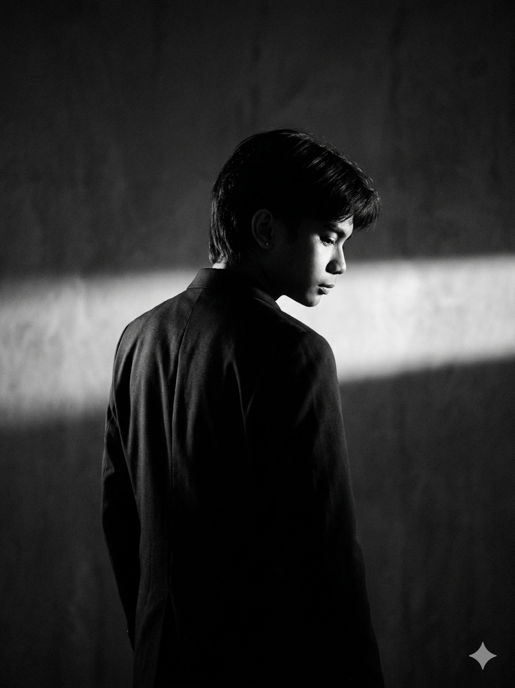
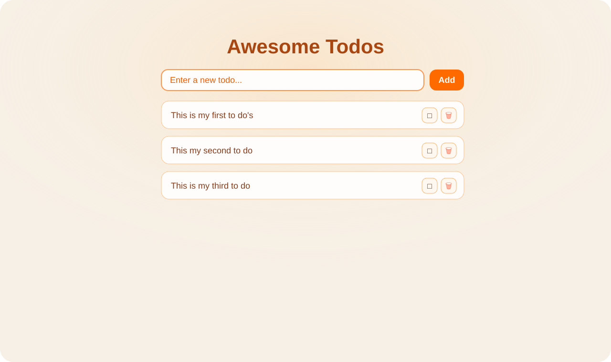
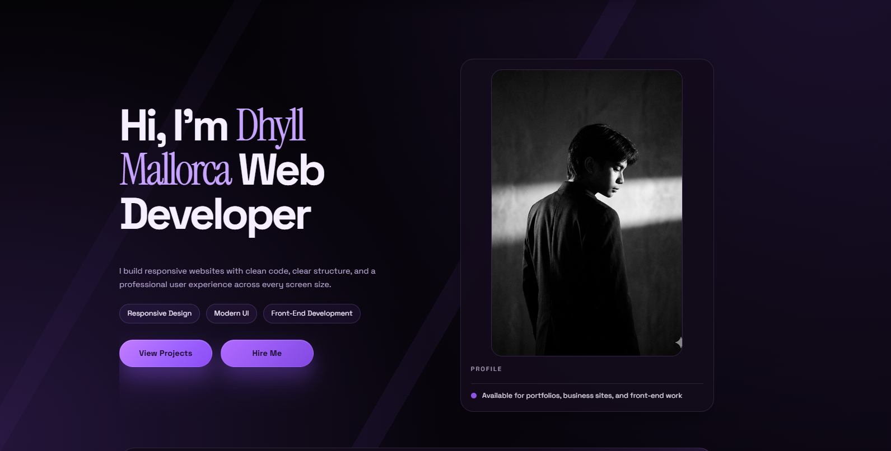

Frontend Dev
Skilled in HTML, CSS, JavaScript, and modern UI principles.
Dhyll Mallorca
Web Developer
Age: 19
Location: Jaro, Iloilo, Philippines
Email: mallorcadhylljustine@gmail.com
School: Western Institute of Technology
Focus: Responsive websites and front-end development
I enjoy building responsive websites that feel clean, easy to use, and polished on every screen.

Hi, I'm Dhyll Mallorca, a front-end developer who enjoys creating clean, responsive, and user-friendly websites. I like turning ideas into simple interfaces that feel smooth and easy to navigate.
I'm always learning and improving my skills in HTML, CSS, and JavaScript so I can build websites that look good, work well, and leave a strong first impression.
Skilled in HTML, CSS, JavaScript, and modern UI principles.
Creating layouts that work well on desktop, tablet, and mobile.
Blending visual design and technical skills for clean experiences.
Selected Work
Examples of personal, business, and product-focused work.
To-Do App

A simple and clean to-do list application built to help users add, manage, and keep track of daily tasks in a clear and easy way.
View ProjectPersonal Portfolio

A personal portfolio website designed to present my profile, skills, and projects in a way that feels personal, clear, and professional.
View ProjectSkills
The tools and strengths I rely on when building modern websites.
Structured markup and responsive styling for polished interfaces.
Interactive features that make websites feel smoother and more engaging.
Layouts that stay clean and readable on desktop, tablet, and mobile.
Services
Built around clean design, responsive development, and clear presentation.
Personal websites that help developers, creatives, and freelancers stand out.
Responsive HTML, CSS, and JavaScript for websites that feel modern and easy to use.
Landing pages designed to present products and services in a clear, strong way.
Education
Western Institute of Technology
Remedios E. Vilches National High School
East Valencia National High School
Fiscal Jose M. Zambarano Senior Memorial School